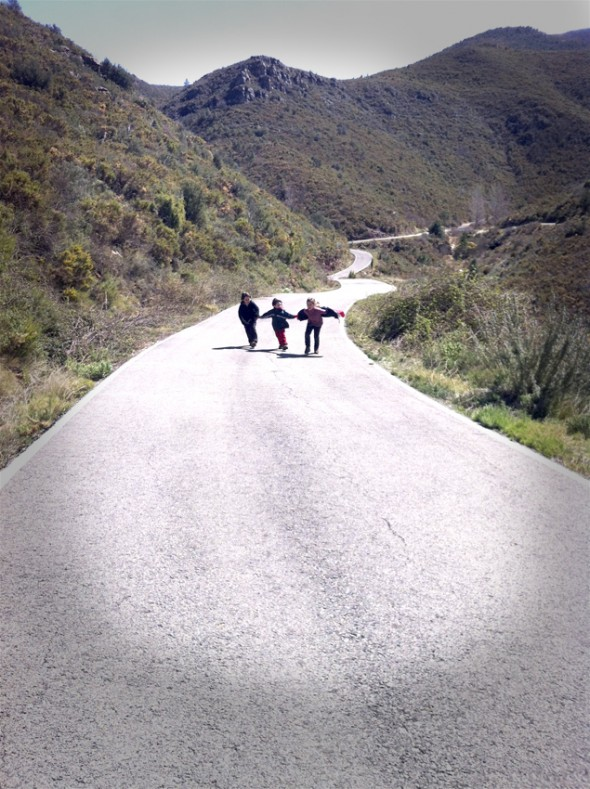

Silly walking
Mi hermano empezó así ;-). Cuando el camino se hace largo para los niños, es genial si uno empieza a caminar de manera diferente y los otros tienen que imitarlo... Si te hace falta una inspiración : The silly walk de Monty Python (youtube).